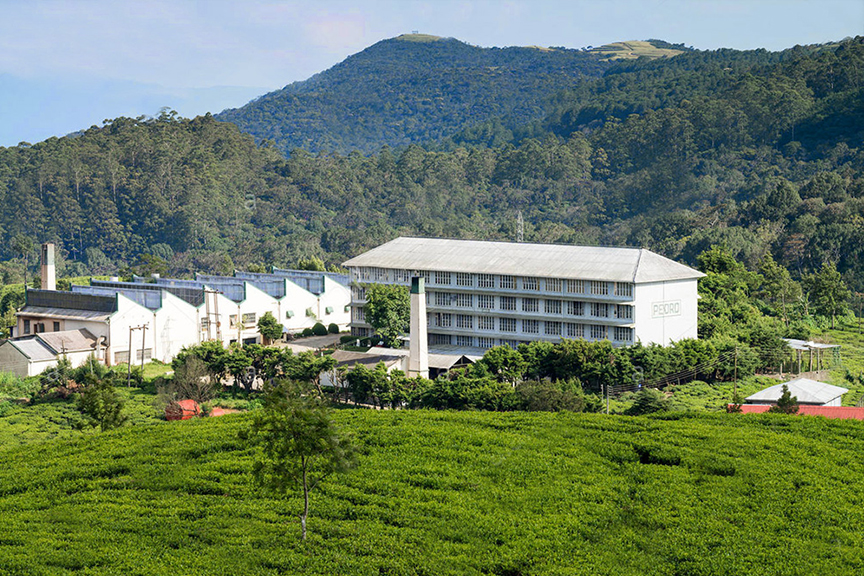

Tea Plantations In Srilanka
Ceylon tea is categorized based on where it is grown, as the elevations and the climate of the region are main contributors to the flavor profile of tea.
For instance, a lighter, more subtle tea grows in the higher elevation tea plantations like Dimbulla and Nuwara Eliya. On the same note, the low grown tea types from the Galle-Matara areas will give you a stronger tea note.
High Grown Tea Plantations In Srilanka
High grown tea is found in the central highlands of Sri Lanka at elevations over 6000ft. Nuwara Eliya, Uda Pussellawa and Dimbulla are the main high-grown tea regions of the country.
- Nuwara Eliya – One of the major tea growing districts in the country since its first tea yields in the 1870s plantations. This small town, fondly known as the little England, produces some of the most relished tea types in Sri Lanka, such as Orange Pekoe (OP) and Broken Orange Pekoe (BOP).
- Uda Pussellawa – While being a neighbor to Nuwara Eliya, the climate of the Uda Pussallawa region is quite different due to its location. The tea itself is slightly darker and appears more potent in flavor compared to the tea found in the Nuwara Eliya region.
- Dimbulla – If you are travelling through Hatton to Nuwara Eliya, you are in the Dimbulla tea country. Tea from this region has a golden-orange hue and a clean and fresh aftertaste.
Mid Grown Tea Plantations In Srilanka
Mid grown tea is produced at an altitude of 2000 to 4000 ft above sea level and is commonly found in the Central and Uva provinces of Sri Lanka.
- Badulla – Badulla is a tea region located in the Uva province of Sri Lanka. The tea that you find in Badulla generally has a mellow, smooth taste which is a unique flavor profile that you do not find anywhere else in the country.
- Kandy - The hill capital of Kandy that is well known for the Temple of the Sacred Tooth Relic is a popular destination among travellers to Sri Lanka. Kandy is another location for mid-grown tea with its bright and robust infusions.
Low Grown Tea Plantations In Srilanka
You can find tea plantations that belong to the low-grown tea category in the Sabaragamuwa and Southern provinces of Sri Lanka at elevations that do not exceed 2000 ft.
- Sabaragamuwa – All the way from the west of Kandy to Udawalawae, passing through Horton Plains, you may see the tea-growing regions in Sabaragamuwa. Tea in this area grows at about 600m above sea level. Due to the long period of sunshine and dry weather here, this tea variety presents a noticeably different aroma with a hint of caramel.
- Ruhuna – Another region famous for low-grown tea with its full and strong flavors, Ruhana offers intensely black and withered looking tea leaves due to its climate and topography. You can find this tea in the southern province close to the coast.
Pedro Estate Nuwara-Eliya

Established in 1880, the Pedro tea estate presents the perfect opportunity to explore a thriving tea plantation in Sri Lanka. Nestled in the backdrop of the Piduruthalaga mountain (Sri Lanka's highest mountain), Pedro estate in Nuwara Eliya is a great spot to observe the colourfully clad tea pluckers. Watch them pluck the tea leaves, and maybe even try your hand at plucking some! After the plantation tour, you may head to the tea factory to observe the processing of tea leaves.
Damro Tea Factory Labookellie

Labookellie factory too stands at an elevation of 5,000 feet and is situated in the salubrious climes of Nuwara Eliya. The estate is recognized as the second oldest tea plantation in the island and yet continues to nurture small extents of tea bushes that are over a century and a half old. Labookellie is acclaimed for producing some of Ceylon’s finest Teas, sought after by connoisseurs of this beverage the world over and the iconic Damro Tea Lounge located adjacent to the Factory, is likewise patronized by scores of foreigners and locals alike, relishing a fresh cup of tantalizing tea, on their onward journey to the central hills.
Blue Field Tea Factory

When the British left after returning the tea estates to Sri Lankan hands, some of the most productive estates were handed into good local hands and continued their success. Some of the smallest estates lay abandoned. And some of them were taken over by local tea growers but failed due to a lack of business acumen and valuable contacts.
Bluefield was such tea estate that was initially unable to succeed after the handover. As a result, the current owners were able to purchase the deteriorating estate at a low cost and bring it back to life. Their maintenance turned Bluefield into a thriving community of 175 families, whose breadwinners work in the tea estate and factory. The 100-acre tea estate is managed by a little over 300 employees, who dedicate themselves to the success of their organization. It plays a major role in the tea export trade and produced top-quality tea that is loved by tea enthusiasts in many countries.
Like many other popular tea factories in Sri Lanka, Bluefield Tea Factory offers a guided tour through the factory for visitors. You can see how tea is dried, pressed and produced. You will get to see the various equipment and hear how they function. You will also visit a tea tasting chamber with different types of teas. There you will get to know the proper way of brewing tea and the various ways to identify the different types of tea.
On completing the tour, you will have the chance to purchase fresh boxes of tea leaves or even small souvenirs from the tea factory’s gift shop. You can also enjoy a cup of hot, perfectly brewed tea and some pastries at the Bluefield’s restaurant before you leave.
Nuwara Eliya has quite a large number of tea factories, tea houses and tea fields. Bluefield Tea Factory in Nuwara Eliya is one of the most popular tea factories in Sri Lanka. They control a large estate around the factory and produce high quality tea that is enjoyed by people from all around the world.
| Name Of Tea |
Exported To |
Image |
| Black Tea |
Russia |
/Heshan%20Pillai%20CB010695/Tea%20plantations%20of%20SL/images/blackteaimg.jpg)
|
| White Tea |
Turkey |
/Heshan%20Pillai%20CB010695/Tea%20plantations%20of%20SL/images/whiteteaimg.jpg)
|
| Green Tea |
Iraq |
/Heshan%20Pillai%20CB010695/Tea%20plantations%20of%20SL/images/greenteaimg.jpg)
|
| Sum |
101,851$ |